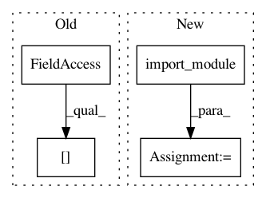

7fa83ed02ee038802d41f955966c892148385bae,debug_toolbar/panels/signals.py,SignalDebugPanel,signals,#SignalDebugPanel#,63
Before Change
parts = signal.split(".")
path = ".".join(parts[:-1])
__import__(path)
signals[parts[-1]] = getattr(sys.modules[path], parts[-1])
return signals
signals = property(signals)
After Change
extra_signals = []
for signal in extra_signals:
mod_path, signal_name = signal.rsplit(".", 1)
signals_mod = import_module(mod_path)
signals[signal_name] = getattr(signals_mod, signal_name)
return signals
def process_response(self, request, response):
In pattern: SUPERPATTERN
Frequency: 3
Non-data size: 4
Instances
Project Name: jazzband/django-debug-toolbar
Commit Name: 7fa83ed02ee038802d41f955966c892148385bae
Time: 2012-05-13
Author: jannis@leidel.info
File Name: debug_toolbar/panels/signals.py
Class Name: SignalDebugPanel
Method Name: signals
Project Name: jazzband/django-debug-toolbar
Commit Name: 7fa83ed02ee038802d41f955966c892148385bae
Time: 2012-05-13
Author: jannis@leidel.info
File Name: debug_toolbar/panels/version.py
Class Name: VersionDebugPanel
Method Name: process_response
Project Name: asyml/texar
Commit Name: 2d20e1fcd06ab8129d857fd28edbd68d21cd7696
Time: 2018-08-27
Author: zichaoy@cs.cmu.edu
File Name: examples/transformer/transformer_overall.py
Class Name:
Method Name: